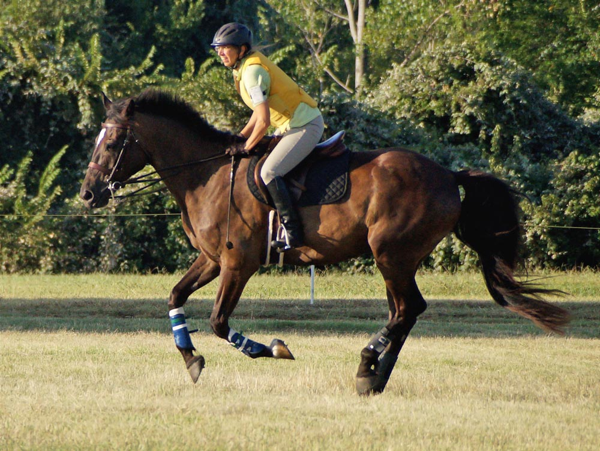
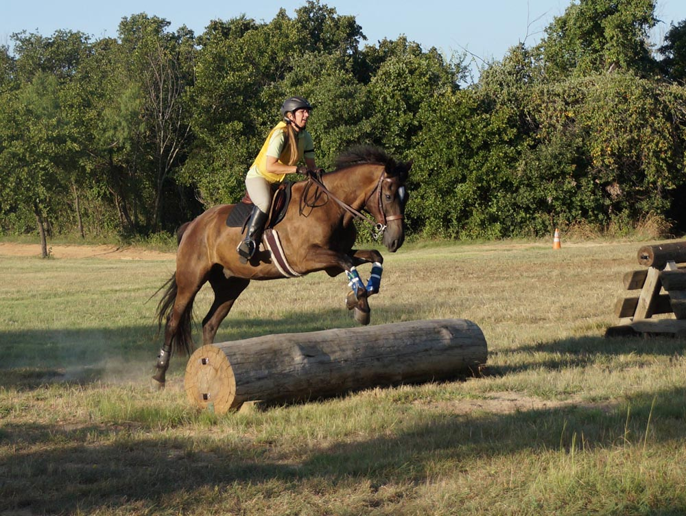

Schooling at Greenwood
It's been a few years since I've schooled at Greenwood. I love how close
it is, but Miaren and I haven't been up to the excitement and challenges until recently.
The last time he was here was with a friend up, and there was drama at the ditch.
Finally I feel good about saying I don't have a ditchy horse. We did show it to
him in advance, but I never felt hesitation.
I had hoped to conquer that and the Trakehner, but we surpassed even that.
We also tackled the faux Weldon's Wall, a corner jump and the novice water combination.
The only hesitation I felt was the second jump on course, and it was a small coop.
After that he was pulling me to the fences and eager.
Cantering through the woods away from the group he'd get looky, but if there was another
jump to focus on he was satisfied.
Part way through he got excited about losing sight of our schooling partner,
but he was able to calm down and tackle some big questions after that.
No refusals with a variety of jumps thrown at him. I think he's starting settle in
with all the jumping practice he's been getting.

He's rather fit and muscled.

Warm up canter. I'm finally getting comfortable with the feel of his cross country
canter. I do a half bridge and let him do the work. I think he's happy to be left
alone to move out.

It took a few jumps for me
to start really giving him his head. I trust him on close
to a loose rein, but when we're balancing before the fence I can forget about how
much he appreciates a long release.
My default isn't as sloppy as it used to be. We've been doing a lot of jumping practice
to try and banish rounding and ducking.
It was nice having another rider out. Miaren could stay relaxed because Stuffy was
relaxed (so I could stay relaxed).
First fence away from the starting box and not even a peek.

I could feel him questioning slightly. I knew he'd go over it, but I wanted to flow,
so gave a tap with the whip and we didn't chip in. We were doing a bending line
to the next fence, and that's where my concentration was already focused. We both
do better when we're looking for another fence and not getting distracted by the
scenery.
This is set up to look like a Weldon's Wall. When we turned to it he was eager,
but I was staying back just in case he stopped. We got a long spot and I was stuck
in the tack. I went to grab for mane and missed.
So left behind with a decent jumping effort by Miaren.
He had his head for the effort and I was clinging with my legs to keep up and soften
the impact.
A lot of rein on the landing since I slipped it as I felt him reach forward. Thighs
engaged to soften the landing and not get him in the back too much. Fairly ugly
on my part. I
need to balance riding defensively with going with him. At least I
can trust him on the landing side.
We don't see a lot of wide jumps, but they tend to be a lot of fun.
He'd started putting his head down and pulling. I don't think I was releasing as
much as he wanted, but I wasn't restricting that much either. We did a jump with
a halt a few strides out to remind him that I was driving.
Pretty boy jumping the stone wall out of the woods.
Finally giving more with my hands. I'm rarely pulling back over a jump now because
I'm worried, it's just a habit to place my hands at his withers.
Cantering back to the group.
I went back and forth on this one. It's a corner. Difficult to tell from the picture,
but it gets wider and the light sides you see show how it spreads from a point.
I want to jump the point, but without wings or anything I knew it would be easy
for him to go around when we got to it.
He obviously did not want to go around it. I aimed for the 3rd or 4th vertical piece
of wood from the left and he stayed straight and true.
A bank down to a jump. We almost cantered between, but then he buried his head and
I needed him to see the jump coming up. He was getting distracted at this point
and worried about his schooling friend.
Until I walked it, I wasn't sure which side would ride better around the tree. There
was easily more room on the left, but a branch to avoid. That's the route we took.
At least 5 minutes of this. His friend was in the shadows, and he couldn't walk
without sidling and trying to pop his shoulder to go over and visit. Trotting wore
me out, but I could at least do circles and figure 8s and keep control. Once I was
exhausted I took him in the shade and he calmed back down.
I let him see the ditch in this area and he didn't even stare. The last time we
were here I couldn't get him near it. Then I showed him this jump over a ditch and
he was so relaxed about it I felt good about taking him over.
He cantered over it handily. A bit more careful than just a log, but he wanted to
jump it. Maybe a month ago we started looking at Trakehners. Little baby ones with
a log over gravel to give the impression of a ditch. He was not impressed at the
time and we had refusals and hesitation. Every week we've tried to jump something
similar. Nothing this big, but teaching the type of question seems to have worked.
Back to something easy before the water complex.
We got to the water and my trainer said take this oxer, then the water. I think
I said 'no way', or something similar, because Bart looked at me and pointed to
Meg, and said, 'um, trainer'. So I made sure she thought we could do it, asked if
I could add in the novice house after the water and turned to come. This jump rode great. He powered to it, we had a perfect spot with a quick turn to hit the water
and then the house. That's why I have a trainer.
He lost some power in the water, but didn't break from the canter and stayed uphill.
Uphill and focusing on the jump after the water.
He lost some momentum after the first up bank, but stayed focused.
And got us up the second bank with a bit of a long spot.
Down I was giving him his head, but half halting with my seat and asking him not to rush.
Boing and boing and we were down.
Down isn't as scary as it used to be, but I'd still rather go up.
Almost touching down. He plays less after jumps when they're complicated and he
has to focus. Still, he seemed proud of himself today.
That hind end goes way up in the air, but I just stayed over my feet.
And he canters on while I gather my reins.
No ditch refusals today. He took off long most times and maybe gave more power than
needed, but a different horse than the last time he was here.

Grabbing a tuft of mane to be sure and stay with him. More than once I think my
trainer (and a few riders) despaired that this would ever happen.
Makes me think of Ministry of Silly Walks. He's definitely flexible. I'm glad he hasn't
done this over regular jumps in a while.
Easy jump as a reward for the ditch work.